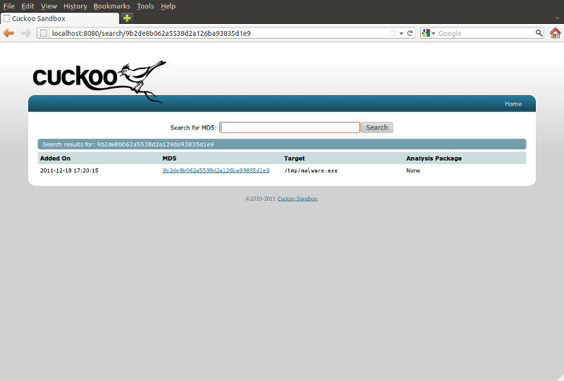

Web Interface¶
Cuckoo Sandbox comes with a very simple and handy web server which is used to navigate and view analysis reports.
Start the Web Server¶
The web server has following options:
Usage: web.py [options]
Options:
-h, --help show this help message and exit
-t HOST, --host=HOST Specify the host to bind the server on (default localhost)
-p PORT, --port=PORT Specify the port to bind the server on (default 8080)
In order to start it, just launch:
$ python web.py
You should see displayed:
Starting web server on localhost:8080
You can change the host and the port on which to bind the web server by specifying them with the appropriate options.
Recent Analysis¶
If you now open your browser and go to http://localhost:8080/ you will see Cuckoo’s index page, which includes a list of the 30 most recent analysis and a web form through which you can search for analysis by MD5 hash.

By filling the form and submitting it you’ll be prompted with search results. By clicking on the MD5 of one of the analysis, you’ll be prompted with the report for that specific analysis.
Search for MD5¶
After submitting a valid MD5 in the search form, you’ll be prompted with all the analysis performed on the file matching that hash.

View Report¶
When requesting the report of a specific analysis, the web server will returns you the appropriate HTML report. Please notice that if in your Cuckoo Setup you disabled the generation of HTML reports (see Configuration), a 404 error will be returned.